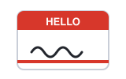
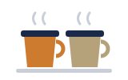

01Hello · សួស្តីmeet
Hi, nice to meet you.
សួស្តី រីករាយដែលបានស្គាល់អ្នក។
ការណែនាំខ្លួនឯង · ពេលជួបមនុស្សថ្មីជាលើកដំបូង
ពេលជួបមនុស្សថ្មី គេតែងសួរតែប៉ុន្មានរឿងដដែលៗ៖ ឈ្មោះ មកពីណា ធ្វើការអ្វី និងចូលចិត្តអ្វី។

Nameប្រាប់ឈ្មោះមុនគេការជួបគ្នាមួយ តាមលំដាប់៖ សួស្តី → អំពីខ្លួន → ការងារ → ពេលទំនេរ → លាហើយ។
Space listen · ← → move · K show text
Hi, nice to meet you.
សួស្តី រីករាយដែលបានស្គាល់អ្នក។
My name is Uddam.
ខ្ញុំឈ្មោះ ឧត្តម។
I'm from Cambodia.
ខ្ញុំមកពីប្រទេសកម្ពុជា។
I live in Phnom Penh.
ខ្ញុំរស់នៅភ្នំពេញ។
I work as a software developer.
ខ្ញុំធ្វើការជាអ្នកអភិវឌ្ឍន៍កម្មវិធី។
I'm learning English for my job.
ខ្ញុំកំពុងរៀនភាសាអង់គ្លេសសម្រាប់ការងារ។
In my free time, I like listening to music.
ពេលទំនេរ ខ្ញុំចូលចិត្តស្តាប់តន្ត្រី។
On weekends, I spend time with my family.
នៅចុងសប្តាហ៍ ខ្ញុំចំណាយពេលជាមួយគ្រួសារ។
It was great talking to you.
រីករាយណាស់ដែលបាននិយាយជាមួយអ្នក។

See you soon!
ជួបគ្នាឆាប់ៗ!
កំហុសពីរដែលអ្នករៀនខ្មែរធ្វើញឹកញាប់។
Say "I work as a developer" or "I'm a developer".
និយាយ "I work as a developer" ឬ "I'm a developer"។
កុំដាក់ am ជាមួយកិរិយាសព្ទ work។ ប្រើ am តែជាមួយនាម ឬគុណនាម៖ I'm a developer។
Yes. Next time, say "Nice to see you again".
បាទ/ចាស។ លើកក្រោយ និយាយ "Nice to see you again"។
meet = ជួបលើកដំបូង។ see = ជួបម្តងទៀត។
My name is Uddam. Please call me Dam.확인 필요 · checkcheck
ខ្ញុំឈ្មោះ ឧត្តម។ ហៅខ្ញុំថា Dam ក៏បាន។
I'm from Cambodia.
ខ្ញុំមកពីប្រទេសកម្ពុជា។
I'm a software developer.확인 필요 · checkcheck
ខ្ញុំជាអ្នកអភិវឌ្ឍន៍កម្មវិធី។
I like listening to music and watching movies.확인 필요 · checkcheck
ខ្ញុំចូលចិត្តស្តាប់តន្ត្រី និងមើលភាពយន្ត។
ប្រើឃ្លាទាំងនេះ ពេលស្តាប់មិនទាន់ ឬរកពាក្យមិនឃើញ។
Tap a word's play button to hear it. Hide one side, then recall it before you tap to check.
Hi, nice to meet you. My name is Uddam.
សួស្តី រីករាយដែលបានស្គាល់អ្នក។ ខ្ញុំឈ្មោះ ឧត្តម។
I'm from Cambodia. I live in Phnom Penh.
ខ្ញុំមកពីប្រទេសកម្ពុជា។ ខ្ញុំរស់នៅភ្នំពេញ។
I work as a software developer. I'm learning English for my job.
ខ្ញុំធ្វើការជាអ្នកអភិវឌ្ឍន៍កម្មវិធី។ ខ្ញុំកំពុងរៀនភាសាអង់គ្លេសសម្រាប់ការងារ។
In my free time, I like listening to music. On weekends, I spend time with my family.
ពេលទំនេរ ខ្ញុំចូលចិត្តស្តាប់តន្ត្រី។ នៅចុងសប្តាហ៍ ខ្ញុំចំណាយពេលជាមួយគ្រួសារ។
It was great talking to you. See you soon!
រីករាយណាស់ដែលបាននិយាយជាមួយអ្នក។ ជួបគ្នាឆាប់ៗ!
Q. Do I say "I am work" or "I work"?
Q. និយាយ "I am work" ឬ "I work"?
A. Say "I work as a developer" or "I'm a developer".
A. និយាយ "I work as a developer" ឬ "I'm a developer"។
Q. Is "Nice to meet you" for the first time only?
Q. "Nice to meet you" ប្រើតែលើកដំបូងទេ?
A. Yes. Next time, say "Nice to see you again".
A. បាទ/ចាស។ លើកក្រោយ និយាយ "Nice to see you again"។
Q. What's your name?
Q. អ្នកឈ្មោះអ្វី?
A. My name is Uddam. Please call me Dam.
A. ខ្ញុំឈ្មោះ ឧត្តម។ ហៅខ្ញុំថា Dam ក៏បាន។
Q. Where are you from?
Q. អ្នកមកពីណា?
A. I'm from Cambodia.
A. ខ្ញុំមកពីប្រទេសកម្ពុជា។
Q. What do you do?
Q. អ្នកធ្វើការអ្វី?
A. I'm a software developer.
A. ខ្ញុំជាអ្នកអភិវឌ្ឍន៍កម្មវិធី។
Q. What do you like to do in your free time?
Q. ពេលទំនេរ អ្នកចូលចិត្តធ្វើអ្វី?
A. I like listening to music and watching movies.
A. ខ្ញុំចូលចិត្តស្តាប់តន្ត្រី និងមើលភាពយន្ត។
Sorry, could you say that again?
សុំទោស អាចនិយាយម្តងទៀតបានទេ?
Could you speak a little slower, please?
សូមនិយាយយឺតបន្តិចបានទេ?
And you?
ចុះអ្នកវិញ?
Say it in your head first, then tap the box to check.